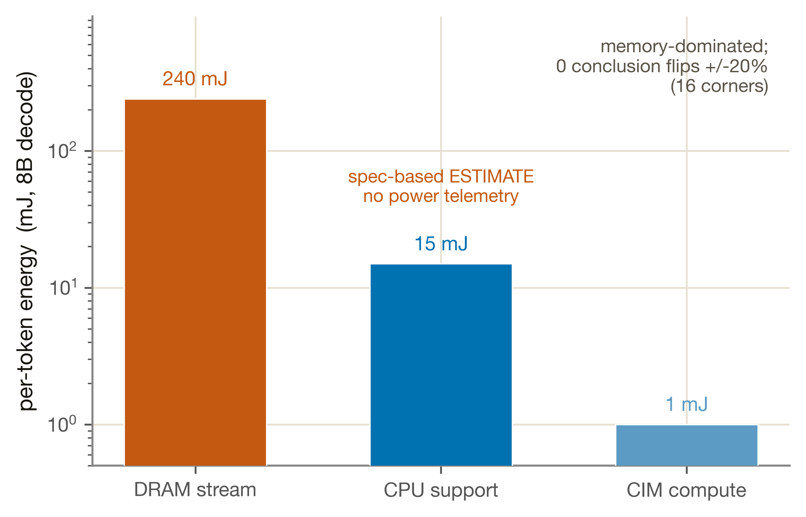
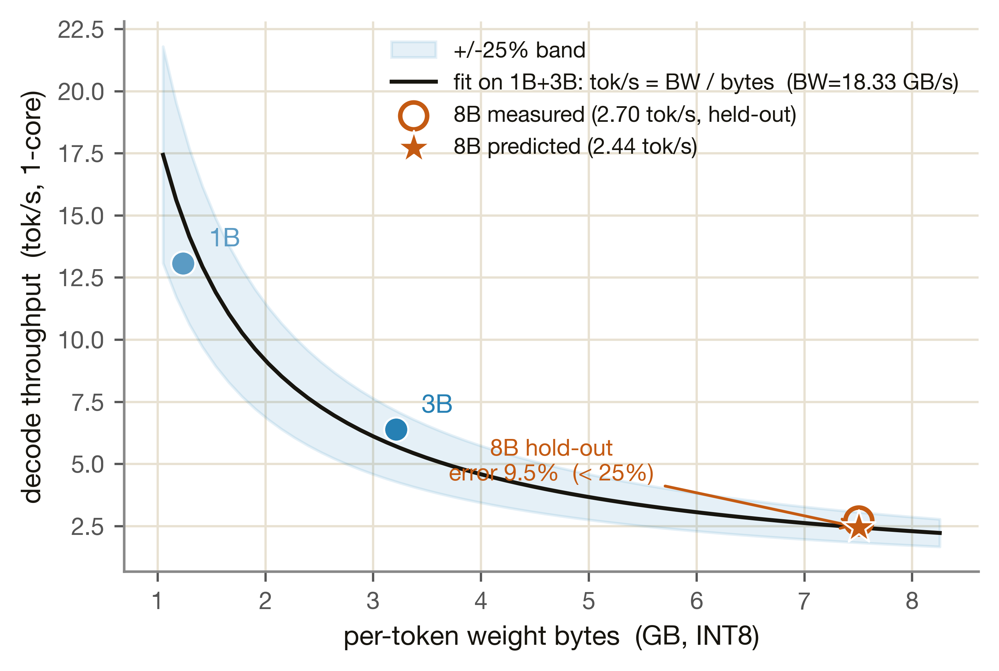

能量估計 + 端到端驗證
兩件不同性質的事放在一頁：M7 的 per-token 能量估計（spec-based、無功耗遙測，只能說「哪一項主導」），與 Phase 1 唯一的端到端矽晶驗證點——recompose hold-out（以 1B+3B 擬合一個有效頻寬、外插預測 8B decode tok/s，誤差 9.5%）。
本頁的兩半，誠實標籤剛好相反，必須先講清楚：
① 能量（M7）的基本功能——估算 decode 每 token 的能耗：能量 = 活動因子 × 硬體規格功率。CIM 投影用 15 TOPS/W、DRAM streaming 用 LPDDR5 pJ/bit、CPU 支援用 A76 W/core×核數。關鍵誠實項：兩塊板子都沒有功耗遙測（ADR-0005），所以能量永遠是估計、不是量測。它的價值不在絕對 mJ 數，而在「哪一項主導」這個定性結論——並且這個結論對每個係數 ±20% 都穩健。
② 端到端（e2e）的基本功能——把各單元的 decode 模型串起來，做一個跨模型 hold-out：decode backbone 是 weight-streaming 受限，tok/s ≈ BW_eff / per_token_weight_bytes；用 1B+3B 擬合 BW_eff，外插預測 8B（8B 不參與擬合），再對量測 tok/s。這一半是矽晶驗證的 tok/s（calibrated chip 為何在能量上 OFF、但 e2e tok/s 其實成立，§4 會說明這個區分）。
1a · 能量：沒有功耗量測，只有 spec-based 估計
必須開門見山：Aetina Alpha 與 Metis Card 都沒有 on-board 功耗儀表，RKNPU2 也無功耗遙測，所以 M7 沒有任何一點對到真實量到的功率（ADR-0005）。我們不對能量做數值 gate（無量測可對），只做 sanity + 敏感度。下圖把 8B decode 每 token 的三項能量攤開——注意 bar 高不是量到的功率，是規格推算值，重點是哪一項主導：

1b · e2e：量產 Card 的 batch-1 decode tok/s（真矽）
能量無量測，但端到端用的量是真的：1B/3B/8B 三個模型在量產 Metis Card 上各自量到的 batch-1、單核 decode tok/s（8B 量值 2.7 tok/s）。這是 §3 hold-out 的 ground truth——recompose 拿這些真矽 tok/s 來驗證「擬合 BW + 外插」的端到端模型，而非驗證能量。
能量模型：活動因子 × 規格功率
模型很簡單，關鍵在每個常數都是規格推算（assumption）、不是量測。能量 = 活動因子（搬幾個 bit、算幾個 op、CPU 幫忙多久）× 硬體規格功率。每個參數的物理意義與來源：
| 參數 | 值 | 物理意義 / 誠實標籤 |
|---|---|---|
| CIM 能效 | 15 TOPS/W | 每瓦多少兆 INT8 op：廠商 Metis INT8 規格。CIM 投影能量 = op 數 / 此值。assumption（廠商數據） |
| LPDDR5 pJ/bit | 4.0 pJ/bit | 搬一個 bit 的能量：DRAM streaming 能量 = 權重 bit 數 × 此值。主導項的係數。assumption（datasheet） |
| PCIe pJ/bit | 5.0 pJ/bit | 離散 host↔device 搬移的每 bit 能量。assumption（datasheet） |
| A76 core 功率 | 0.75 W/core × 4 | CPU 支援功率：能量 = 功率 × 支援時間。支援時間本身是粗略的 per-token 估計。assumption |
| 8B decode total | 256.15 mJ/token | 三項加總；隱含平均功率量級合理（order-of-magnitude sanity，非精確值） |
e2e：recompose 兩支柱 BW 擬合
decode backbone 模型化為「把整個權重從 DRAM 串一遍」——所以 tok/s 與每 token 權重位元組成反比，比例常數就是有效頻寬 BW_eff。兩支柱法：只用 1B+3B 兩點擬合 BW_eff，8B 完全不參與，留作 hold-out。每個參數：
| 參數 | 值 | 物理意義 |
|---|---|---|
| fit BW_eff | 18.33 GB/s | 有效頻寬：用 1B+3B 兩點擬合的比例常數。略低於 M2 的 24.2 校準錨點，因端到端 tok/s 還含 attention 等非權重成本 |
| 8B 預測 | 2.44 tok/s | 外插值：BW_eff / 8B 權重位元組，8B 不在擬合內 |
| 8B 量測 | 2.70 tok/s | ground truth：量產 Card 真矽 decode tok/s |
M7 與 e2e 不掛任何 heavy-sim 引擎。本節的「模擬」= 把 decode 模型串成端到端、外插到未參與擬合的 8B，由真矽 tok/s 驗證。這是 Phase 1 唯一的端到端量測級驗證點：

tok/s = BW/bytes（藍帶 ±25%）。兩顆藍點（1B/3B）是擬合錨點。8B 是 hold-out：橘空心圈是量測 2.70 tok/s、橘星是純外插預測 2.44 tok/s，兩者誤差只有 9.5%、落在 ±25% 內。模型放大、tok/s 沿同一條 memory-bound 曲線掉——證明 decode 端到端的 weight-streaming 圖像是對的。
圖 M7·2 · 來源 recompose.json › per_token_weight_bytes / measured_tok_s_1c / pred_8b_tok_s · 腳本 tools/plotting/site_m7.py
| 檢查 | 值 | 門檻 | 結果 |
|---|---|---|---|
| 能量為正且隨活動單調 | — | 必過 | ✅ PASS |
| 記憶體主導（DRAM ≫ CPU ≫ CIM） | 240.149 ≫ 15.0 ≫ 1.001 mJ | order-of-mag | ✅ PASS |
| ±20% 敏感度結論翻轉 | 0 / 16 corners | 0 翻轉 | ✅ 穩健 |
| 絕對 mJ 數值對功耗量測 | — | — | ⚠ 無遙測，永遠 estimated |
| 指標 | 值 | 門檻 | 結果 |
|---|---|---|---|
| 8B decode 預測 vs 量測 | 2.44 vs 2.70 tok/s | — | hold-out |
| 8B 相對誤差 | 9.5% | ≤ 25% | ✅ PASS |
| 項目 | 狀態 |
|---|---|
| 能量介面（per-token mJ 分解） | ✅ 就緒，但標籤永遠 estimated |
| 「記憶體主導」定性結論 | ✅ 對 ±20% 穩健（0 翻轉） |
| decode 端到端 recompose hold-out | ✅ silicon-validated（8B 9.5%） |
| 能量對到真實功耗量測 | ⚠ 無功耗遙測（Phase 2 缺口；M.2 Max 才有 INA236） |
| prefill 能量 / prefill 端到端 | ⚠ 未驗證（Phase 1 校準幾乎全在 decode 路徑） |
| 非-streaming 項加回（避免重複計算） | ⚠ Phase 2 watch-item（已吸收進 BW_eff） |
最大缺口：沒有任何功耗遙測。整個能量模型是 spec-based 估計，結論的價值在「哪一項主導」（記憶體），不在絕對 mJ。若 Phase 2 取得功耗遙測（M.2 Max 的 INA236），能量可升級為 measured。e2e 端：decode 路徑已 silicon-validated，但 prefill 整條路徑沒有正面端到端驗證（BOUNDED-EXTRAPOLATED，見缺口章）。
- 能量分解：
validation/reports/phase1.1/m7.json › per_token_8b_decode_mJ / per_token_total_mJ / dominant_term - 能量敏感度：
validation/reports/phase1.1/m7.json › sensitivity_pm20pct (corners_tested / conclusion_flips) / sanity - 能量規格常數：
simulator/models/params/m7_energy.json（cim_tops_w / lpddr5_pj_per_bit / pcie_pj_per_bit / a76_core_w / cpu_cores） - 能量 contract / 限制：
validation/contracts/m7.yaml（measurement_sources = none，ADR-0005） - recompose hold-out：
validation/reports/phase1.1/recompose.json › fit_BW_GBs / pred_8b_tok_s / measured_8b_tok_s / rel_error_8b / GATE_within_25pct - per-token 權重位元組 / 量測 tok/s：
validation/reports/phase1.1/recompose.json › per_token_weight_bytes / measured_tok_s_1c - 非-streaming 重複計算 watch-item：
validation/reports/phase1.1/recompose.json › standalone_nonstreaming_8b_us._caveat